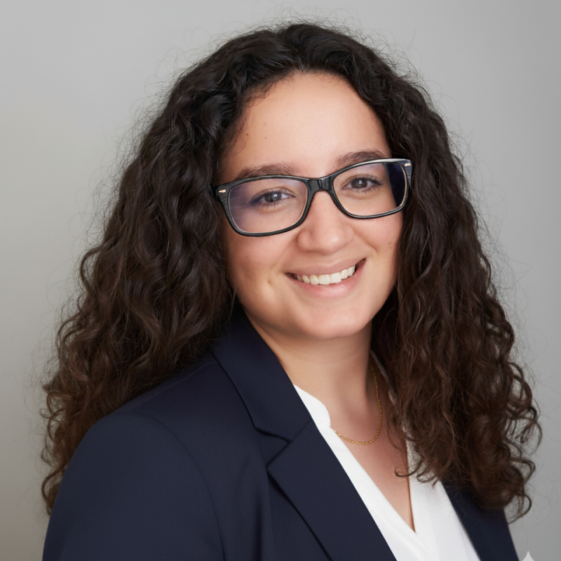

Aerospace Engineer · Seville, Spain
Specialised in aircraft performance, experimental aerodynamics and propulsion systems for RPAS. Currently expanding into computational engineering — because the best engineers speak both physics and code.

I'm an aerospace engineer with a deep fascination for how things fly — and why, sometimes, they don't. My work sits at the intersection of experimental physics and numerical simulation: designing test campaigns, extracting aerodynamic data from wind tunnels, and turning that data into meaningful models.
I spent part of my master's at ISAE-SUPAERO in Toulouse — one of the best aerospace schools in Europe — which sharpened both my technical skills and my ability to work across cultures and languages.
Outside of engineering, I'm someone who values building things from scratch: whether that's a scale wind tunnel model, a dance routine, or now — a programming foundation. I think carefully, act deliberately, and care a lot about doing things well.
Wind tunnel experimental study of a 1:4 scale convertible UAV. Redesigned the test setup to eliminate systematic errors, extracted aerodynamic stability derivatives from oscillatory motion data, and translated results into design recommendations. Project ProVANT EMERGENTIa.
Full design, manufacturing and testing of a wind tunnel model. Generated polynomial interpolation curves for each aerodynamic coefficient, delivered ready for flight simulator implementation. Awarded Matrícula de Honor (highest distinction).
Harvard's foundational CS course: algorithms, data structures, C, Python, SQL, and web programming. Final project in development.
Work in progressBuilding a foundation in Python and computational tools to start working on projects at the intersection of aerospace engineering and software.
Watch this spaceWhether you have a role to discuss, a project idea, or just want to connect — I'd love to hear from you.
loretovrp@gmail.com